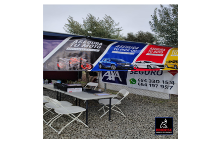

La historia de RINORISK agentes de seguros Tijuana, México comienza en el año 2012, cundo su fundador el SR. David Bárcenas quiso ejercer como Agente de seguros inició repartiendo tarjetas de trabajo a las personas, las cuáles tenían una frase en la parte trasera de estas de un célebre libro "Cómo ser un rinoceronte" el cuál es uno de los libros favoritos de su fundador. El grupo Rino, está ubicado en las oficinas de 20 de noviembre aquí en Tijuana,BC. Aunque se encuentra su presencia en diversos sitios de BCN. Ofrece diversas opciones de servicios y productos a sus clientes.
Nuestra visión a largo plazo es facilitar el acceso universal a la tranquilidad y protección que brinda un seguro vehicular. Nos dedicamos a construir un entorno en el que todas las personas, sin importar su situación económica o el tipo de vehículo que posean, puedan beneficiarse de la seguridad que proporciona un seguro. Trabajamos para contribuir al bienestar general asegurando más protegido para toda la comunidad.
La misión de nuestra empresa de seguros es ofrecer una cobertura confiable para vehóculos, incluyendo automóviles, pickups y hasta motocicletas, brindando tranquilidad a nuestros clientes mientras circulan en las carreteras. Nos comprometemos a proporcionar soluciones de seguro eficientes y adaptadas a us necesidades individuales, garantizando la protección y seguridad que merecen en cada viaje.


©2024. Derechos reservados
Desarrollado por: Pamela Duran Mendoza Matricula: 02121050 Grupo: 606
Plantel Nueva Tijuana